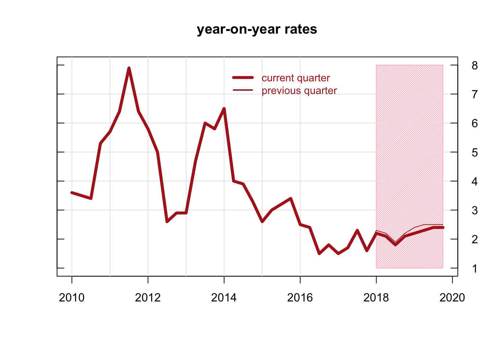
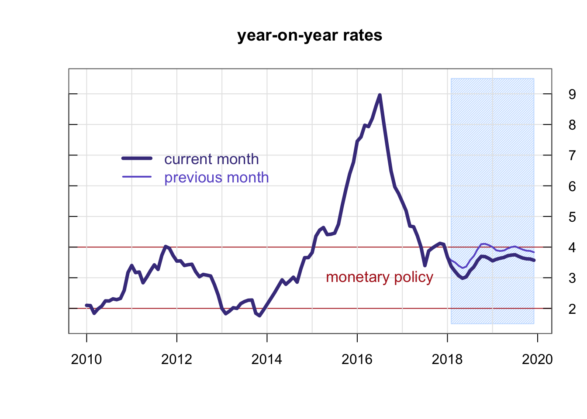
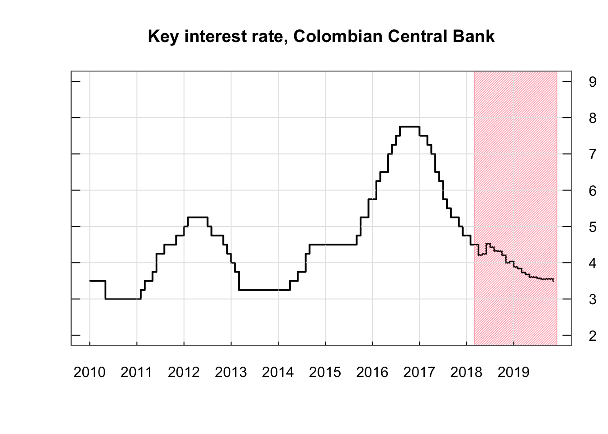

This section presents the monthly updating forecasts for the GDP, inflation and monetary policy in Colombia. The forecasts are analyzed with time series techniques, especially Bottom-Up procedures in hierarchical structures. The methodology consider the idiosincracy of models at disaggregate level of the variables, with the advantage of including proper monthly indicators for each sector. The forecasts also include a scenario for the movements of one of the most important variable for the Colombian economy: the world oil price. The bottom of the section shows the expected key interest from the Central Bank, based on the Taylor rule.
See monthly reports in PDF (Spanish):
2018
> January
2017
> December
> November
> October
> September
> August
> July
> June
> May
> April
> March
> February
> January
2016
> December
> November
> October
> September
> August
> July

| –Weights– | –Observed– | –Forecast– | –Innovation– | |
|---|---|---|---|---|
| Agriculture | 6.1 | 7.1 | 4.6 | 2.5 |
| Mining | 7.0 | -2.1 | -6.7 | 4.6 |
| Industry | 11.1 | -0.6 | 0.2 | -0.8 |
| Household services | 3.5 | 1.9 | 0.9 | 1.0 |
| Construction | 7.2 | -2.1 | 4.0 | -6.1 |
| Trade | 12.2 | 1.4 | 1.5 | -0.1 |
| Transport | 7.3 | 0.2 | 1.1 | -0.9 |
| Financial | 20.3 | 3.2 | 4.0 | -0.8 |
| Services | 15.4 | 3.2 | 4.3 | -1.1 |
| Taxes | 9.5 | 5.0 | 4.3 | 0.7 |
| Private consumption | 64.6 | 1.7 | 2.2 | -0.5 |
| Public consumption | 17.5 | 3.9 | 5.0 | -1.1 |
| Gross capital formation | 29.2 | 0.2 | 5.7 | -5.5 |
| Exports | 16.0 | 4.5 | 3.0 | 1.5 |
| Imports | 28.1 | 2.5 | 3.1 | -0.6 |
| TOTAL | 100.0 | 2.0 | 2.3 | -0.3 |
| –2014– | –2015– | –2016– | –2017– | –2018– | |
|---|---|---|---|---|---|
| Agriculture | 2.7 | 2.5 | 0.5 | 5.6 | 3.0 |
| Mining | -1.2 | 0.2 | -6.5 | -4.5 | -1.6 |
| Industry | 1.0 | 1.7 | 3.0 | -1.2 | 2.1 |
| Household services | 3.4 | 3.0 | 0.1 | 1.1 | 2.9 |
| Construction | 10.3 | 3.7 | 4.1 | 0.3 | 5.9 |
| Trade | 5.0 | 4.6 | 1.8 | 0.8 | 1.6 |
| Transport | 4.6 | 2.6 | -0.1 | 0.1 | 2.0 |
| Financial | 5.8 | 5.1 | 5.0 | 3.5 | 3.1 |
| Services | 5.2 | 3.1 | 2.2 | 3.1 | 3.1 |
| Taxes | 5.7 | 0.7 | 2.2 | 3.2 | -2.5 |
| TOTAL | 4.4 | 3.1 | 2.0 | 1.6 | 2.1 |
| –2014– | –2015– | –2016– | –2017– | –2018– | |
|---|---|---|---|---|---|
| Private consumption | 4.3 | 3.2 | 2.1 | 2.3 | 3.4 |
| Public consumption | 4.7 | 5.0 | 1.8 | 4.1 | 2.1 |
| Gross capital formation | 11.6 | 1.2 | -4.5 | 1.6 | 1.6 |
| Exports | -1.5 | 1.2 | -0.9 | 0.8 | 4.7 |
| Imports | 7.9 | 1.4 | -6.2 | 2.9 | 3.3 |
| TOTAL | 4.4 | 3.1 | 2.0 | 1.6 | 2.1 |

| –Weights– | –Observed– | –Forecast– | –Error– | |
|---|---|---|---|---|
| TOTAL | 100.0 | 4.1 | 4.0 | 0.0 |
| Core | 71.8 | 5.0 | 4.8 | 0.2 |
| FOOD | 28.2 | 2.2 | 2.5 | -0.3 |
| Processed food | 20.0 | 1.9 | 2.2 | -0.3 |
| Non-processed food | 8.2 | 2.9 | 3.3 | -0.4 |
| Non-energy industrial goods | 21.0 | 2.4 | 2.5 | 0.0 |
| Services | 44.1 | 5.7 | 5.4 | 0.3 |
| Energy | 6.7 | 5.9 | 5.7 | 0.2 |
| –TOTAL– | –CORE– | –Food– | –Manufactures– | –Services– | –Energy– | |
|---|---|---|---|---|---|---|
| 2014– | 2.9 | 2.8 | 3.1 | 1.1 | 3.4 | 3.5 |
| 2015– | 5.0 | 4.1 | 7.3 | 4.7 | 4.1 | 2.4 |
| 2016– | 7.5 | 5.9 | 11.5 | 7.8 | 5.0 | 7.0 |
| 2017– | 4.3 | 5.0 | 2.8 | 3.7 | 5.4 | 5.3 |
| 2018– | 3.9 | 4.4 | 2.6 | 1.2 | 5.4 | 6.1 |

César Castro Rozo © January, 2018